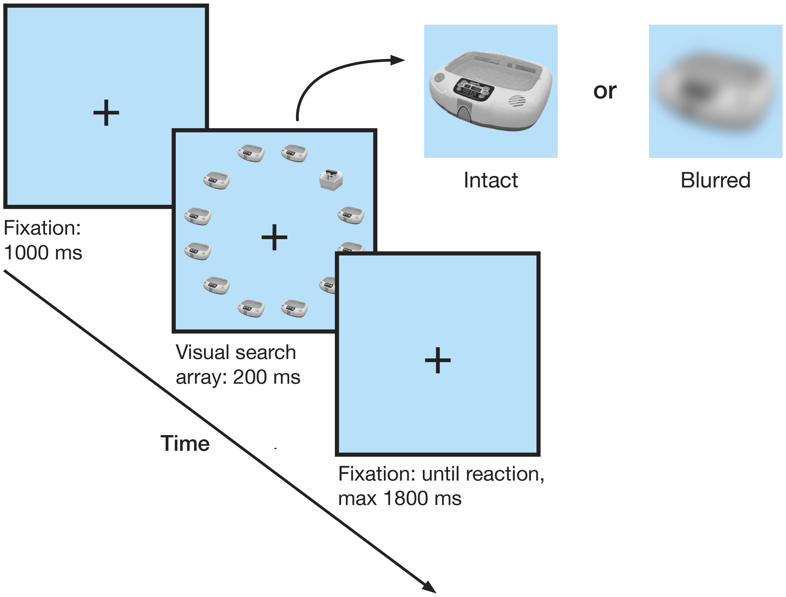
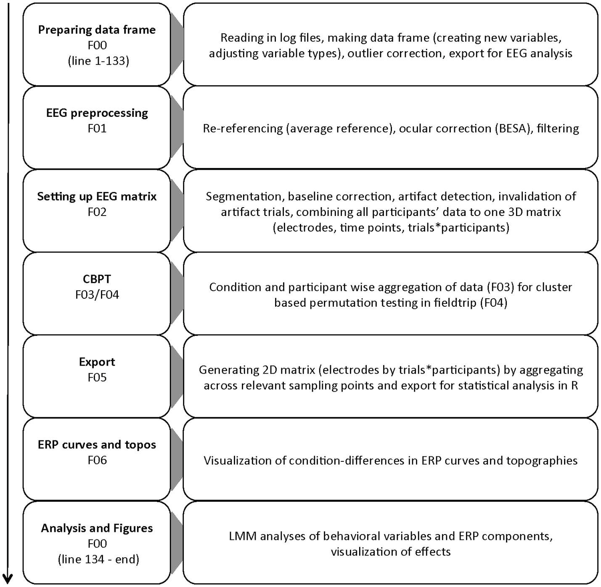
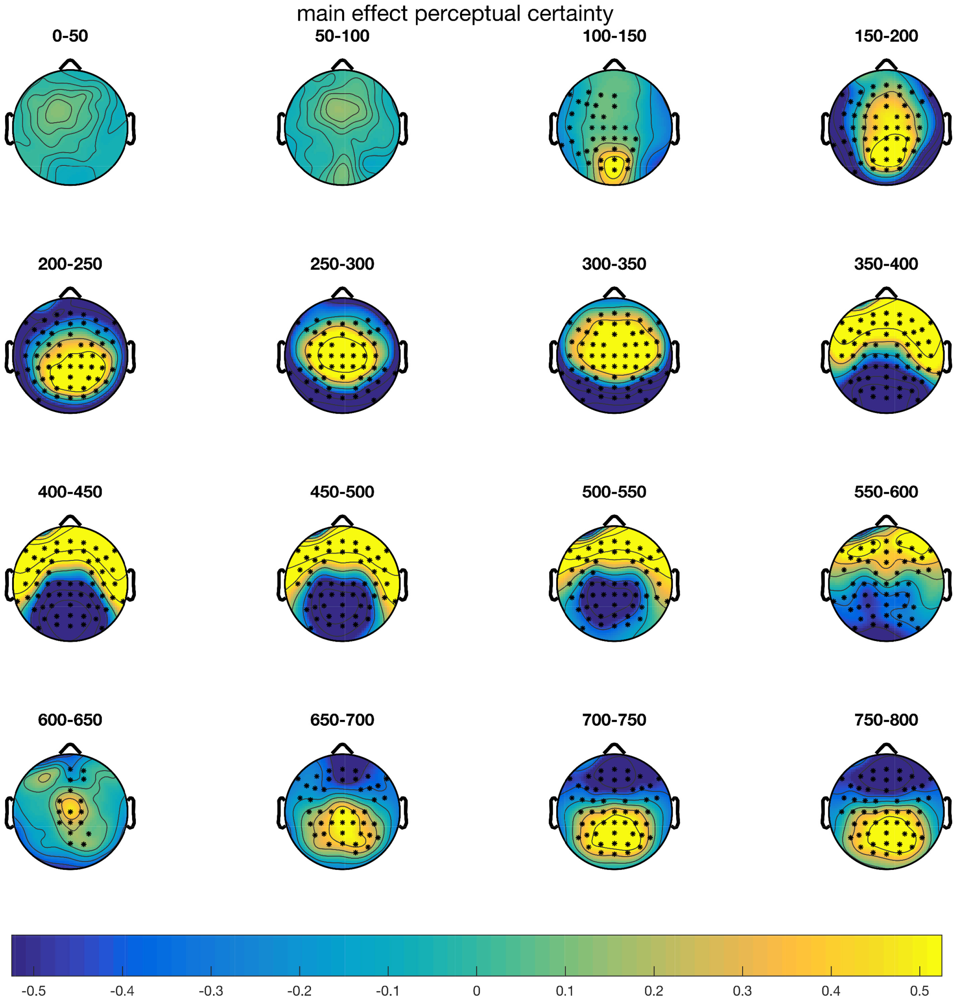

2 Frömer et al. (2018)
Frömer (2018). Group-Level EEG-Processing Pipeline for Flexible Single Trial-Based Analyses Including Linear Mixed Models
Here we present an application of an EEG processing pipeline customizing EEGLAB and FieldTrip functions, specifically optimized to flexibly analyze EEG data based on single trial information. The key component of our approach is to create a comprehensive 3-D EEG data structure including all trials and all participants maintaining the original order of recording. This allows straightforward access to subsets of the data based on any information available in a behavioral data structure matched with the EEG data (experimental conditions, but also performance indicators, such accuracy or RTs of single trials). In the present study we exploit this structure to compute linear mixed models (LMMs, using lmer in R) including random intercepts and slopes for items. This information can easily be read out fromthematched behavioral data, whereas itmight not be accessible in traditional ERP approaches without substantial effort.We further provide easily adaptable scripts for performing cluster-based permutation tests (as implemented in FieldTrip), as a more robust alternative to traditional omnibus ANOVAs. Our approach is particularly advantageous for data with parametric within-subject covariates (e.g., performance) and/or multiple complex stimuli (such as words, faces or objects) that vary in features affecting cognitive processes and ERPs (such as word frequency, salience or familiarity), which are sometimes hard to control experimentally or might themselves constitute variables of interest. The present dataset was recorded from 40 participants who performed a visual search task on previously unfamiliar objects, presented either visually intact or blurred. MATLAB as well as R scripts are provided that can be adapted to different datasets.
2.1 Cookbook
Data and Scripts can be found here.
2.1.1 Example Task

- Visual detection task
- Identify position (left or right) of deviating object (top and bottom row excluded from analysis)
- All objects within one trial blurred or not (difficulty)
- Behavioural DVs: Accuracy and reaction time
- Brain DVs: ERP magnitude
2.1.2 Scripts
- EEG-data processing with EEGlab for data cleaning, structuring and plotting
- applying cluster-based permutationtests as implemented in FieldTrip for data screening and ROI selection
- single-trial based LMM analyses using the lme4 package for R

- Preprocessing in
F01_preprocessing.m. - All trials of all participants were combined in a 3D matrix (channels, time points, trials by participants), which forms the basis for all further ERP analyses (
F02_epoching_structuring.m).- Can we achieve the same structure when Data was preprocessed in Brain Vision Analyzer?
- Single trial information for CBPT and plotting was exported to Matlab in the same analysis script,
F00_behavioral_data_and_LMM_analyses.R.- \(\to\) Not sure what is first?
F00seems to indicate that this Script is initially run, but you’d need CBPTs before LMM. Probably,F00is calling the other scripts first and then conducting the LMM analyses?
- \(\to\) Not sure what is first?
- CBPT using FieldTrip in
F04_permutation tests.m- Based on aggregated data obtained with
F03_prep_permutation_tests.m.
- Based on aggregated data obtained with
- Relevant time windows of the single trial EEG data, as determined using CBPT were then exported for single trial LMM analyses using
F05_export.m. - ERP data were plotted using
F06_plotting.m.- TO DO: See if
Rcan do a better job?
- TO DO: See if
2.1.3 Analyses
- With
lme4; \(p-\)values withlmerTest(Satterthwaite approximation for degrees of freedom):- Accuracy was analyzed with generalized linear mixed models (GLMMs), fitting a binomial model.
- For the linear mixed models (LMM) analyses of reaction times (RTs) and ERPs, we further excluded trials with incorrect responses.
- Fixed effects structures of LMMs and GLMMs were reduced stepwise by excluding non-significant interaction terms/predictors and compared using anova ratio tests until the respectively smaller model explained the data significantly worse than the larger model (significant X2-test).
- That means: Manual inspection/decisions? See different steps in script
F00.
- That means: Manual inspection/decisions? See different steps in script
- “We followed up the significant interactions by running additional models with the two factors nested within each other to obtain the effects of one factor at each level of the other factor, respectively.”
- “Note that for this procedure to be accurate, these models need to be specified identically to the original model except for the nesting.”
- Another way shown in script: Obtain these with the
difflsmeans()function from thelmerTestpackage.
2.1.3.1 For brain data

- CBPTs comparing mean amplitudes over the epoch 0 – 800 ms for blurred vs. intact stimulus conditions
- Differences started around 100 ms after stimulus onset and remained throughout the whole epoch.
- Three clusters:
- From 116 ms on, the blurred condition evoked more positive amplitudes at central, parietal and frontocentral electrode sites (p = 0.002).
- Between 124 and 594 ms, the blurred condition evoked lower amplitudes at parietal and occipital electrodes (p = 0.002).
- Between 640 and 800 ms, the blurred condition evoked lower amplitudes at frontal and frontocentral electrodes (p = 0.008).
- “Here we limit the follow-up analyses to the fronto-central N2 between 250 and 350ms (FC1, FC2, C1, Cz, C2), as well as the centro-parietal P3b/CPP (CP3, CP1, CPz, CP2, CP4, P3, Pz, P4, PO3, POz, PO4) between 400 and 550 ms.”
- That means: Rather arbitrary decision that is not guided roughly, but not all too much by CBPT results (and partly by literature).
2.1.3.2 Brain data predicting behaviour
- Centered amplitudes for N2 and P3b as predictors for behaviour.
- Open question: That is: Mean amplitude for specified time window?
- “For these analyses, we divided all single trial amplitudes by 10, as
lme4suggested rescaling of the variables to support model identifiability. Thus, the estimates from these analyses relate to amplitude changes of \(10 \mu V\).”- TO DO: How to scale variables properly?
2.1.3.3 Fixed Effects
- Perceptual uncertainty (blurred or not)
- Position (left or right)
2.1.3.4 Random Effects
Random Intercepts for:
- Participants (variance in individual means across all conditions, e.g., variance in average response time or ERP magnitude)
- Object pairs (variance in means across stimuli, e.g., variance in average response times across stimuli)
Random Slopes for the predictors (estimates the variance in the effect of a given manipulation across individuals or items):
- Perceptual uncertainty
- Position
Random effects not supported by the data (explaining zero variance according to singular value decomposition) were excluded to prevent overparameterization
For all predictors we applied sliding difference contrasts, thus the resulting estimates can be interpreted as the difference between subsequent factor levels (level 2 minus level 1, e.g., intact minus blurred).
- The advantage of this contrast is that the fixed effect intercept (group-level mean) is estimated as the grand average across all conditions (e.g., the empirical group-level mean), rather than the mean of a baseline condition, as for example for the default treatment contrast, which can cause troubles when using multiple predictors.
2.1.4 Model
These are simplified versions of their models (various exlusion criteria are included for a1 in their versions) for reaction times. The same logic applies to accuracy, only with glmer (To do: Have a close look at the differences or rather, when to use what.). I only included the code for reaction times as an example of the general procedure.
Open question: Does this notation imply that there is no random slope for the interaction of the fixed effects (n_b = blurred or not; DeviantPosRL = left or right)? Is that even possible?
lmer(RT ~ n_b * DeviantPosRL + (n_b + DeviantPosRL|vpn) +
(n_b + DeviantPosRL|Objektpaar),
data = a1,
REML = FALSE)Then, they use these models to get the interactions. See analyses for specification.
# deviant position within perceptual certainty
lmer(RT ~ n_b/DeviantPosRL + (n_b + DeviantPosRL|vpn) +
(n_b + DeviantPosRL|Objektpaar),
data = a1,
REML = FALSE)# perceptual certainty within deviant position
lmer(RT ~ DeviantPosRL/n_b + (n_b + DeviantPosRL|vpn) +
(n_b + DeviantPosRL|Objektpaar),
data = a1,
REML = FALSE)Later, these models are reduced to the following forms. To do: Check how and why.
lmer(RT ~ n_b * DeviantPosRL + (n_b + DeviantPosRL|vpn),
data = a1,
REML = FALSE)lmer(RT ~ n_b * DeviantPosRL + (1|vpn),
data = a1,
REML = FALSE)2.1.5 Brain Stuff
ERP data is taken from Matlab and then, the same logic is applied to e.g. the N2 values (To do: Check what is represented here - mean? Peak? Time windows?). Regarding our goal to model random effects for items: “Note, random slope by item was omitted due to zero variance explained by that component.”
They then include scaled (centered) N2 and P3 fixed effects in their model with accuracy (and later reaction time) as outcome, which looks something like this:
lmer(accuracy ~ n_b * DeviantPosRL * (scN2) * scP3 + (n_b + DeviantPosRL|vpn) +
(n_b + DeviantPosRL|Objektpaar),
data = a1,
family = binomial)They try some different versions with various interactions and compare the models to each other with ANOVAs. To do: Get clear what we want to look at and why.
2.2 Behavioural Results
- For hit rates: main effects of pecerptual certainty and position.
- And an interaction.
- For RT: main effect of perceptual certainty, but position n.s. (see comparison below).
- And an interaction.
- Following up on interactions:
- Accuracy
- Effect of position for blurred, but not intact stimuli.
- Effect of perceptual certainty for both positions.
- RT
- No effect of postion for both blurred and intact stimuli.
- Effect of perceptual certainty for both positions.
- Accuracy
2.2.1 Comparison to standard ANOVA and regression
2.2.1.1 on RT data
- ANOVA: only main effect of perceptual certainty.
- Regression: main effects of perceptual certainty and position.
- Open question: In mixed model, there was no main effect of position. Naturally, estimates of effects stay the same in mixed model vs. regression (they do stay roughly the same; see commented out results in their analysis script), but the standard error changes and hence, the significance of the effect.
- They compare the original LLM with
- one omitting the random effects for items
- one with random intercepts for participants only (without random effects)
- \(\to\) The standard error of the effect for position drops across these models.
- They say: “[T]he LMM was more sensitive than the ANOVA and more specific than the ordinary regression.”
- Probably because the LMM picked up an interaction and the ANOVA didn’t.
- Probably because the regression picked up a main effect of position where the LLM found none.
- However, the regression also missed the interaction effect.
- Better model fit for LMM than for regression (obviously).
2.2.1.2 On accuracy data
- ANOVA not appropriate, but logistic regression.
- Same results with regards to significant effects.
- But: Underestimation of standard errors.
- Better model fit for GLMM than for regression (obviously).
2.3 Brain Results N2
“The model estimates are summarized in Table 3 and can be read out directly as mean differences in \(\mu V\) (Note: Should be due to sliding differences.) for main effects. Note that the N2 is a negative component; so negative estimates correspond to an increase in amplitude and positive estimates to a decrease in amplitude.”
Main effect of perceptual certainty: Reduced N2 for blurred vs. intact.
Main effect of position: Reduced N2 for right vs. left stimuli.
And an interaction.
- Significant effect of perceptual certainty for right and left position.
- Position effect for intact but not for blurred stimuli.
Comparison to ANOVA and regression: Same results, but better fit for LMM.
2.4 Brain Results P3b
- Main effect of perceptual certainty: Reduced P3b for blurred vs. intact stimuli.
- No main effect of/interaction with position.
- Stepwise model reduction: First, interaction excluded. Then: Position excluded altogether.
- However: Random slope per participant for position still included, because removing it significantly decreased model fit.
- Open question: Is that possible/wise? How do you interpret the random effect without a main effect? Because the standard deviation of the effect is pretty meaningless when you don’t know the effect?
- Author interpretation: "[…] while there is no group level effect of deviant position, there are reliable individual differences in this effect, which might reflect differences in the use of top-down information for decision-making.
- Comparison to ANOVA and regression: Same results, but better fit for LMM.
2.5 Results Brain Behaviour Relationship Accuracy
Centered amplitudes of N2 and P3b as predictors for behaviour.
- See analyses for details/open questions.
No 4- or 3-way-interactions, no interactions of perceptual certainty with position or N2 \(\to\) excluded from the model. (There’s still an awful lot of stuff left in this model.)
- Fit not significantly worse; fit indices even smaller (= better fit).
No main effect of N2 on accuracy, but interaction N2 \(\times\) position.
- For left position: Larger N2 amplitudes related to higher detection likelihood.
- For right position: No effect; descriptively if anything smaller amplitudes.#
Accuracy increased with increasing P3b amplitude.
P3b \(\times\) perception certainty: P3b effects on blurred and intact.
P3b \(\times\) position: P3b effects on left and right.
N2 \(\times\) P3b: Accuracy increased more strongly with P3b when N2 was smaller.
Comparison with logistic regression: Similar results, but no interaction between P3b and perceptual certainty.
Better fit for GLMM.
“We ran additional GLMMs, sequentially omitting random effects per item and random slopes, to see what produces the difference between the two methods. The estimate decreased when omitting the crossed random structure and was no longer significant in the model with random intercept per participants only. Thus this effect was revealed when controlling for variance in effects across participants.”
- Open question: What estimate are they referring to? How can a fixed effect (?) decrease when omitting random effects? It cannot be the estimate of the standard error, because then the effect would rather be significant instead of no longer being significant?
2.6 Results Brain Behaviour Relationship RT
- No 2-way or higher-order interactions between perceptual certainty and N2; so those were excluded.
- RTs decreased with increasing N2 amplitude (attention: negative!).
- N2 \(\times\) position: Decreased RT with higher N2 amplitude for left and right position.
- Partial effects of this interaction on RTs: retrieved using the package
remef(predicted partial effects plots).
- Partial effects of this interaction on RTs: retrieved using the package
- Shorter RTs for larger P3b amplitudes.
- P3b \(\times\) perceptual certainty: Shorter RTs with larger P3b amplitude for blurred and intact stimuli.
- N3 \(\times\) P3b interaction; N3 \(\times\) P3b interaction \(\times\) position
- Stronger RT decrease with P3b amplitude increase when N2 amplitude is smaller (less negative).
- Significant for left and right position.
- Different effects for comparison with regression.
- Stepwise reduction of LMM:
- When omitting crossed random effects, position effect became significant.
- Further omitting random slopes per participant: 3-way-interaction not significant anymore.
- Position \(\times\) P3b interaction only revealed when random intercept included.